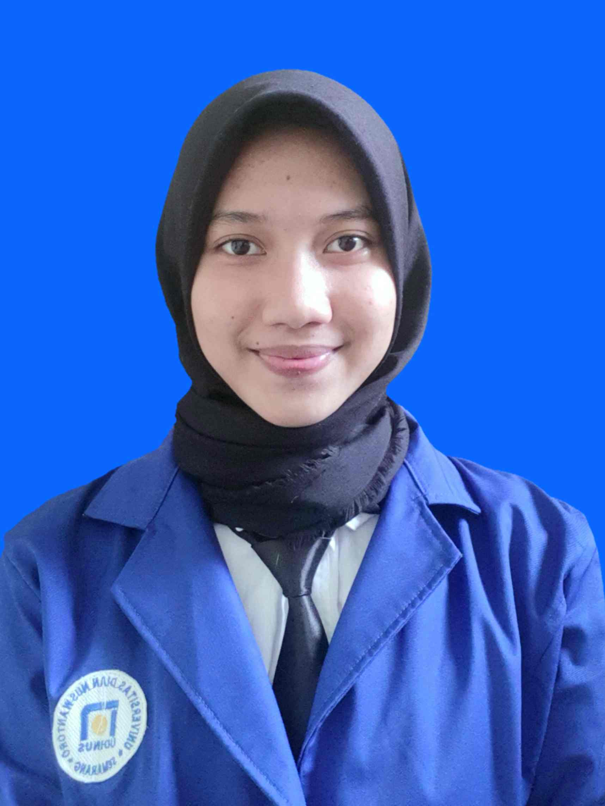

|  | Nama | : | Selma Marsya Finda |
| Jurusan | : | Teknik Informatika | |
| NIM | : | A11.2020.12528 | |
| Dosen Wali | : | Heru Agus Santoso, Ph.D | |
| Status | : | Mahasiswi Aktif | |
| Alamat | : | Jalan Kuda, Rt 03 / Rw 07 Wonosari, Ngaliyan, Semarang | |
| No.HP | : | 085868272603 | |
| : | 111202012528@mhs.dinus.ac.id |
| No | Kode Mata Kuliah | Kelompok | Mata Kuliah | SKS | Status |
|---|---|---|---|---|---|
| 1. | A11.5410 | A11.4105 | KALKULUS 1 | 4 | A |
| 2. | A11.54102 | A11.4105 | FISIKA 1 | 4 | B |
| 3. | A11.54103 | A11.4105 | DASAR PEMROGRAMAN | 4 | B |
| 4. | A11.54104 | A11.4105 | DASAR DASAR KOMPUTASI | 2 | A |
| 5. | U201702 | A11.4105 | BAHASA INGGRIS | 2 | B |
| 6. | U201705 | A11.4105 | PENDIDIKAN AGAMA | 2 | A |
| 7. | U201704 | A11.4105 | PENGANTAR TEKNOLOGI INFORMASI | 2 | B |
Tentang Saya
Deskripsi Tentang Saya
Nama saya Selma Marsya Finda. Saya berasal dari Kota Semarang. Sekarang saya berumur 19 tahun dan sedang menjalankan kuliah semester 3 dengan jurusan Teknik Informatika di Universitas Dian Nuswantoro. Tetapi saat ini saya sedang melakukan pembelajaran secara online dikarenakan kasus covid-19 yang belum selesai. Untuk mengisi waktu luang, saya memiliki banyak hobi diantaranya Olahraga, menonton film dan menyanyi. Saya melakukan kegitan tersebut supaya lebih produktif saat berada di rumah.
Film Favorite
Akhir-akhir ini saya sedang mengandrungi drama yang berasal dari Korea Selatan yang berjudul "Squide Games". Drama tersebut sangat booming dan sangat banyak di gandrungi oleh masyrakat indonesia. Saya suka drama tersebut karena memang cerita dari dari drama tesebut sangat menarik dan sangat menegangkan juga hehehe. Dan ada film yang juga saya sukai yaitu Luca yang mana film tersebut snagat lucu dan mengharukan.
Playlist Lagu Favorite
Jemmie Miller